Features:
1. [HDMI-KVM USB Switch Dual display] : This KVM switch can control 2 computers through a set of controls (keyboard and mouse) and two displays. Realize 2 in 2 out free choice synchronous switching. You can centrally control and manage your host laptop or game console without having to move from workstation to workstation.
2. [Ultra HD 4K visual enjoyment] : kvm switch supports HDMI 2.0 and standard HDCP 2.2. Supports the highest resolution 4K@60Hz,1080@144Hz, also supports 1080P@120Hz or lower resolution to make the image display more delicate and realistic.
3. [Dual HDMI KVM switch with USB 3.0 port] : Support to connect your USB 3.0 port devices, such as scanner /USB mouse/printer/monitor.
4. [Higher level of keyboard and mouse compatibility] : Support keyboard and mouse through mode (Semi-DDM USB). You can use more keyboard and mouse features that are not supported by regular KVM. Supports wired, wireless, and gaming K&M, with near-zero latency for keyboard and mouse switching.
5. [2.0CH Audio extractor] : KVM Switch comes with a 3.5mm audio jack port with an internal DAC chip that can be plugged into three 3.5mm headphone devices.
6. [Wide compatibility] : This HDMI kvm switch kit supports mirroring mode, extended mode, and cross mode, and is compatible with all laptops and other devices with HDMI ports. It has adaptive EDID for Windows, macOS, Linux, UNIX and other operating systems.
7. [Plug and play] : button switch signal source equipment, press a button can be freely switched between two computers. Simple installation, plug and play, no driver required. Powered by USB.
Three switching modes:
1. Press Select on the KVM switch panel to switch between the two source devices.
2. Use the hotkey switch (Ctrl+Shift+1/2 to PC1/PC2 or Ctrl+Ctrl) and Ctrl+Shift+K to disable the hotkey.
3. Use the infrared remote control to switch PC 1/PC 2.
Installation steps:
1. Shut down all devices and unplug all cables.
2. Plug the HDMI cable and USB cable into the KVM switcher and your computer/laptop (excluding the HDMI cable) :
3. Check whether PC1- HDMI IN 1&in 2, PC2- HDMI IN 1&in 2 corresponds to USB IN1&IN2, HDMI OUTPU 1, HDMI OUTPU2 corresponds to USB IN1&IN2, and do not support mixed insertion.
4.PC1 HDMI IN 1+PC1 hdmiin 2+PC1 USB IN=PC1
PC2 HDMI IN 5.1 HDMI+PC2 HDMI+PC2 USB IN=PC1
6. Insert the mouse and keyboard into the KVM switcher.
7. Connect the HDMI cable and USB cable to the KVM switch and monitor.
8. Connect the power supply to the KVM switcher.
9. Boot your computer/laptop.
Specifications:
- Product type: HDMI USB 3.0 KVM switcher (2 in 2 out)
- Input ports: HDMI 2.0 x 4, USB-C x2, USB 3.0 x 4
- Output port: 2 x HDMI 2.0,1 x L/R audio
- Supports high current hard disk devices
- Supports HDMI 2.0b HDCP 2.2
- Resolution: Support 1080P/1080@144Hz, 3840x2160p, 4K/60Hz resolution, adaptive screen resolution
- Supported systems: Windows XP, Windows7, Windows10, Apple MAC, Linux, Unix
- Product size: 111.8x63.2x24.5mm
- Material: Aluminum alloy shell anti-rust, anti-corrosion, anti-interference, fast transmission, surface oxidation
Packing list:
1 x HDMI KVM switch
2*USB cable
1*USB power cable
1* User manual
1* Infrared remote control (without AAA battery)
Tips!!
1. To support dual displays, your computer's video card must be able to support 2 HDMI outputs at the same time.
2. To use the extended and spliced display features, your video card must be able to do so. Since the dual monitor HDMI KVM switch displays only the content connected to the input. It is a bypass switch and cannot handle these functions on its own.
3. This is an HDMI KVM dual display switch, it is not a 4X2 HDMI KVM matrix.
4. If you have any questions about this product, please feel free to contact us.
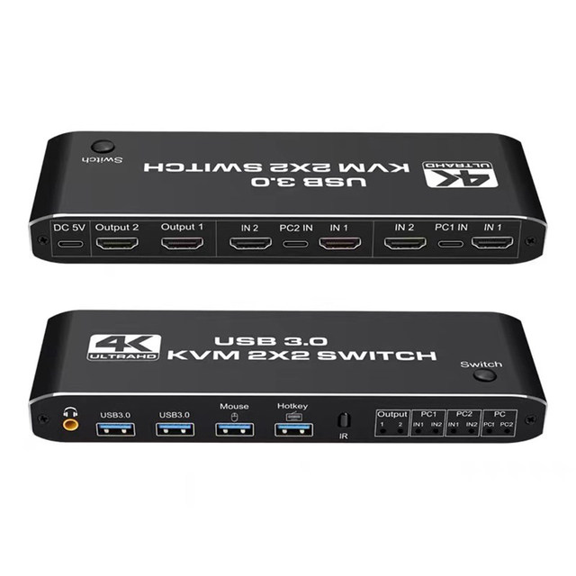
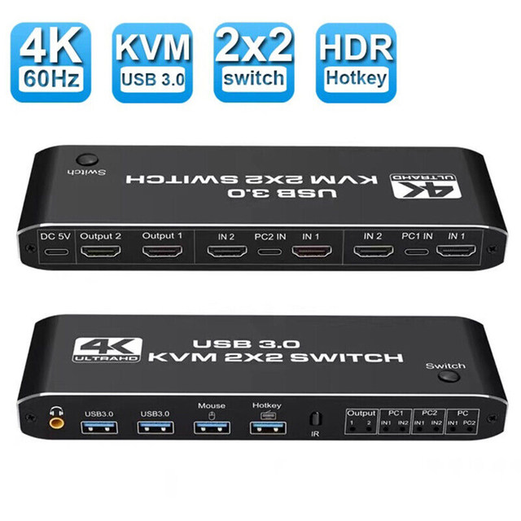
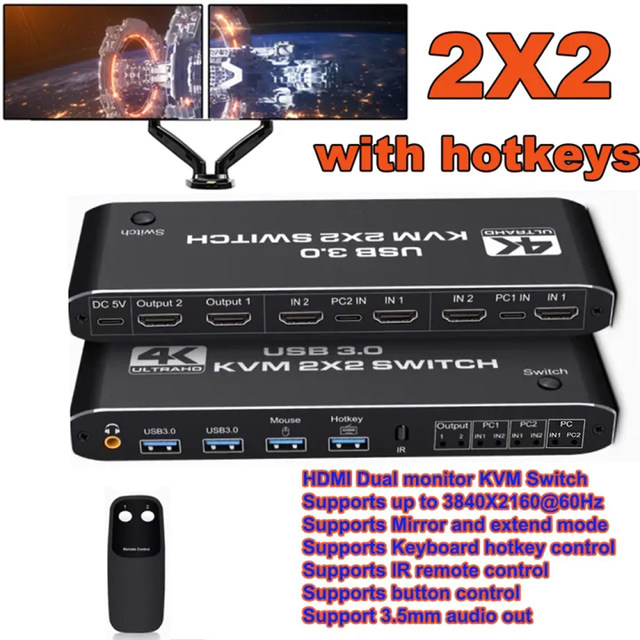
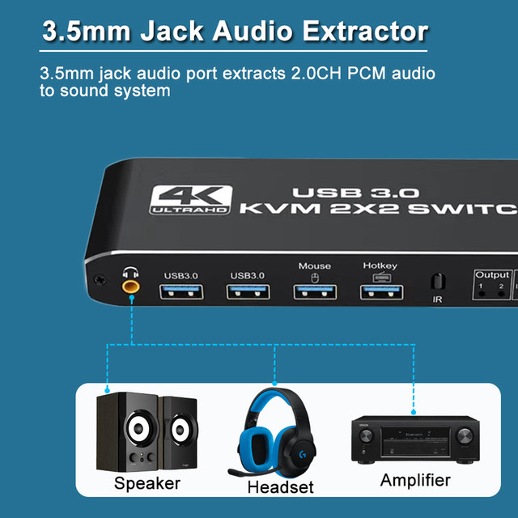
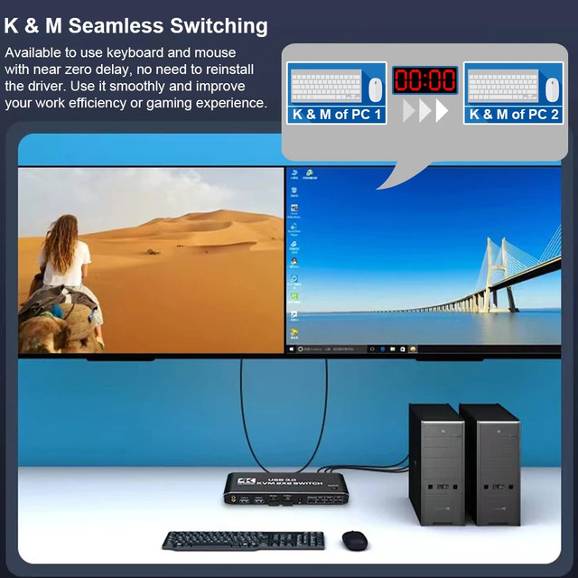
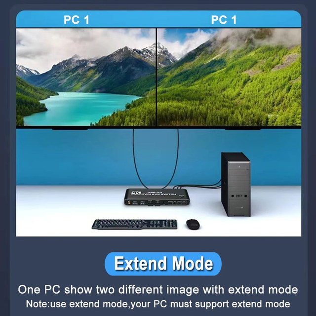
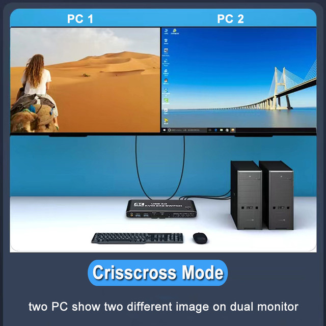
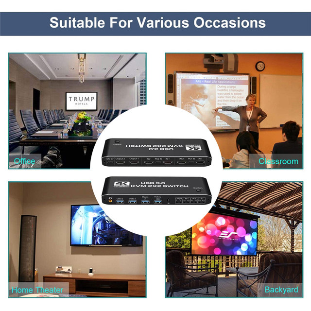
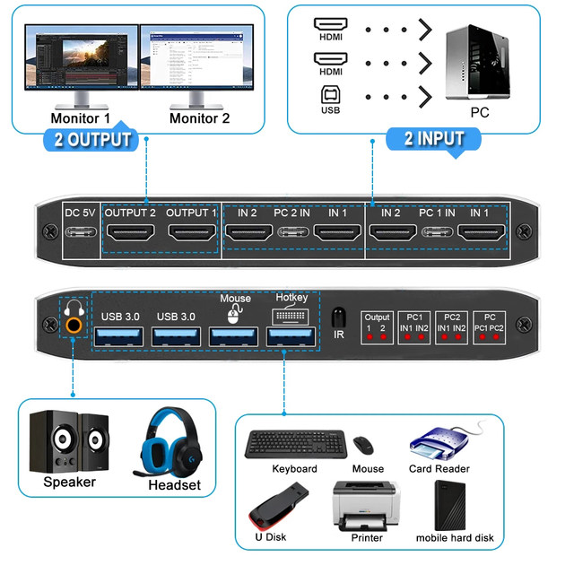
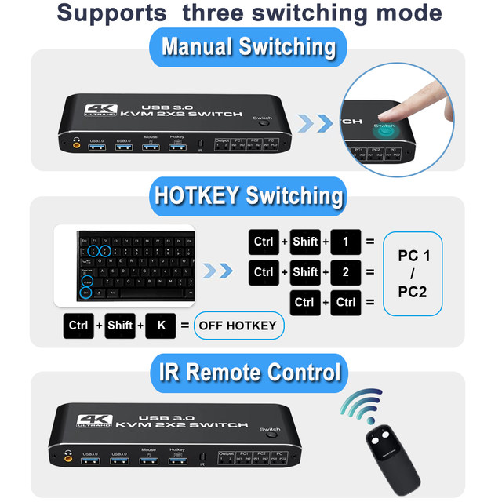
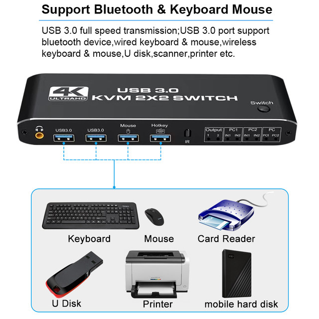